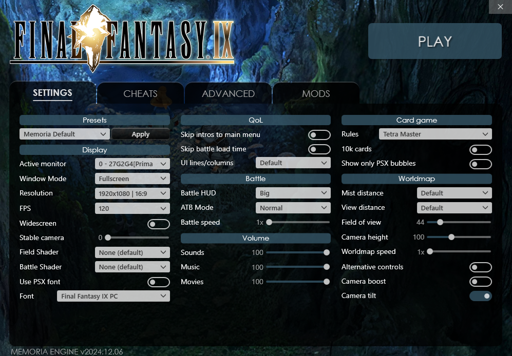
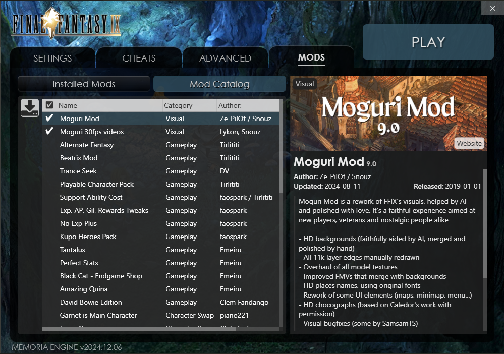

Welcome to the Final Fantasy IX modding section.
I do not encourage the use of these modifications, this is for educational purposes only.
Lets get started!
1º ➤ Download Final Fantasy IX
2º ➤ Download Memoria Patcher from Moguri Official Website
3º ➤ Put Memoria Patcher in the game folder and execute the Memoria.Patcher.exe
4º ➤ After that Memoria will do some modifications on your FFIX Launcher, open the game Launcher
5º ➤ Download for better quality
6º ➤ It will look like this, you can copy my settings if your a beginner and want to play vanilla with a better experience.
7º ➤ You can enjoy the game with 120fps and if you intall Moguri Mod and Moguri 30fps Videos mod your game will look much better with better graphics
8º ➤ If you want Moguri Mod just go to Mods Section in your FFIX Launcher
9º ➤ You will have a list of mods that you can install, we will install those 2 only
10º ➤ Download image for better quality
11º ➤ You select the mod you want to install and click the download arrow
Now you can launch your game in PLAY button, enjoy it!
{kind=link}
{kind=link}